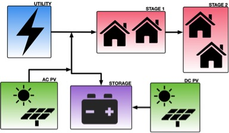
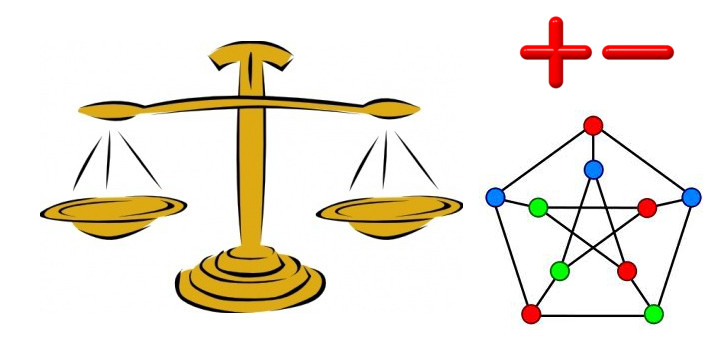
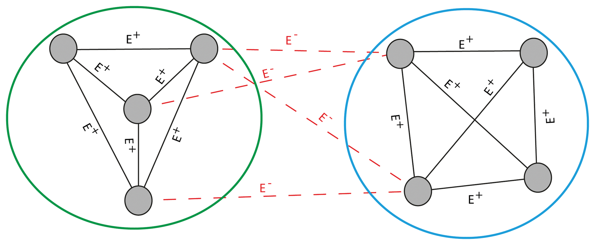
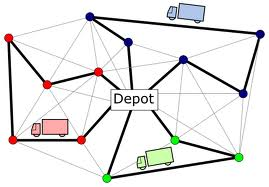
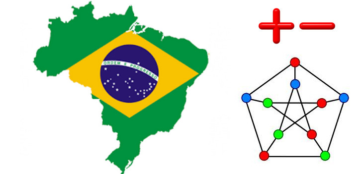

Peer-reviewed articles and academic contributions, preserved from the original publication list. For the most up-to-date citation information, consult my academic profiles.
Journal papers & contributions
Browse the publications below or filter by year and keywords.
ROSSETI, ISABEL; CANELLAS, EDUARDO; SANTOS, WAGNER; LAGE, MARCOS; Frota, Yuri; DE OLIVEIRA, DANIEL. Optimizing Preventive Police Patrol Routes in Brazilian Cities Using a GRASP-Based Routing Heuristic. JOURNAL OF INTERNET SERVICES AND APPLICATIONS. v.17, p.396 - 414, 2026.
2026
SILVA, RODRIGO A. P.; Heidsieck, Gaëtan; PACITTI, ESTHER; Valduriez, Patrick; Frota, Yuri; DE OLIVEIRA, DANIEL. Have We Seen these Data Before? A GRASP-based Execution Strategy for Cloud-based Workflows with Memoization. Concurrency and Computation: Practice and Experience. v.1, p.1, 2026.
2026
SILVA, RODRIGO A. P.; FERREIRA, WESLEY; PACITTI, ESTHER; Frota, Yuri; DE OLIVEIRA, DANIEL. A Greedy Constructive Heuristic for Executing Cloud-Based Workflows with Data Confidentiality Restrictions. SN Computer Science. v.7, p.1, 2026.
2025
ALVARENGA, LUIS C. R.; Frota, Yuri; DE OLIVEIRA, DANIEL; COUTINHO, RAFAELLI. Optimizing Resource Estimation for Scientific Workflows in HPC Environments: A Layered-Bucket Heuristic Approach. CONCURRENCY AND COMPUTATION-PRACTICE & EXPERIENCE. v.37, p.1 - 27, 2025.
2023
LEVORATO, MARIO; SOTELO, DAVID; FIGUEIREDO, ROSA; Frota, Yuri. Efficient solutions to the m-machine robust flow shop under budgeted uncertainty. ANNALS OF OPERATIONS RESEARCH. v.1, p.1 - 35, 2023.
2023
OLIVEIRA, L. F.; FROTA, Y. A. M.; OLIVEIRA, D. C. M. Defining Routes for Emergency Response from Climate Events: a Data-oriented Approach. IEEE Latin America Transactions. v.21, p.1064 - 1072, 2023.
2023
LEVORATO, MARIO; SOTELO, DAVID; FIGUEIREDO, ROSA; Frota, Yuri Robust permutation flow shop total weighted completion time problem: Solution and application to the oil and gas industry. COMPUTERS OPERATIONS RESEARCH. v.151, p.106-117, 2023.
2022
STOCKINGER, M. B.; GUERINE, M.; PAULA JUNIOR, U.; SILVA, F. T. S.; FROTA, Y. A. M.; ROSSETI, I.; PLASTINO, A.; OLIVEIRA, D. C. M.
A Provenance-based Execution Strategy for Variant GPU-accelerated Scientific Workflows in Clouds. Journal of Grid Computing. v.20, p.36 - , 2022.

2022
LEVORATO, MARIO; FIGUEIREDO, ROSA; Frota, Yuri. Robust microgrid energy trading and scheduling under budgeted uncertainty. EXPERT SYSTEMS WITH APPLICATIONS. (JCR): 6,9540, v.1, p.117471 - , 2022.

2021
MORENO, JORGE; MARTINS, SIMONE; Frota, Y. A matheuristic approach for the maximum balanced subgraph of a signed graph. RAIRO-OPERATIONS RESEARCH. v.55, p.3121 - 3140, 2021.
2021
LEVORATO, MARIO; FIGUEIREDO, ROSA; Frota, Yuri;. Exact solutions for the two-machine robust flow shop with budgeted uncertainty. EUROPEAN JOURNAL OF OPERATIONAL RESEARCH. v.1, p.1 - 30, 2021.

2021
QUEIROGA, EDUARDO; SUBRAMANIAN, ANAND; FIGUEIREDO, ROSA; Frota, Yuri.
Integer programming formulations and efficient local search for relaxed correlation clustering. JOURNAL OF GLOBAL OPTIMIZATION, 2021.

2020
QUEIROGA, EDUARDO ; Frota, Yuri ; SADYKOV, RUSLAN ; SUBRAMANIAN, ANAND ; UCHOA, EDUARDO ; VIDAL, THIBAUT. On the exact solution of vehicle routing problems with backhauls. EUROPEAN JOURNAL OF OPERATIONAL RESEARCH, v. 287, p. 76-89, 2020.
2019
MORENO, JORGE; MARTINS, SIMONE; Frota, Y. A new approach for the rainbow spanning forest problem. SOFT COMPUTING, v.1, p.1 - 10, 2019.
2018
FIGUEIREDO, ROSA; Frota, Yuri; LABBÉ, MARTINE. A branch-and-cut algorithm for the maximum -balanced subgraph of a signed graph. DISCRETE APPLIED MATHEMATICS. v.1, p.1 - 38, 2018.
2018
MORENO, JORGE; MARTINS, SIMONE; Frota, Yuri. An exact and heuristic approach for the d-minimum branch vertices problem. COMPUTATIONAL OPTIMIZATION AND APPLICATIONS. v.1, p.1-27, 2018.
2018
MORENO, JORGE; MARTINS, SIMONE; Frota, Yuri. A note on the rainbow cycle cover problem. NETWORKS. v.1, p.1-15, 2018.
2018
CAPUA, RENATHA ; Frota, Yuri ; OCHI, LUIZ SATORU ; VIDAL, THIBAUT . A study on exponential-size neighborhoods for the bin packing problem with conflicts. JOURNAL OF HEURISTICS, v. 1, p. 1, 2018.
2017
TEYLO, LUAN., UBIRATAN DE PAULA., DRUMMOND, LUCIA M.A., Frota, Yuri, DE OLIVEIRA, DANIEL. A hybrid evolutionary algorithm for task
scheduling and data assignment of data-intensive scientific workflows on clouds. Future Generation Computer Systems, v. 76, p. 1 - 17,
2017.
2017
COUTINHO, RAFAELLI; Frota, Yuri; OCANA, KARY; DE OLIVEIRA, DANIEL; Drummond, Lucia M. A. Mirror Mirror on the Wall, How Do I Dimension My Cloud After All? In: Computer Communications and Networks. Springer International Publishing, 2017, p. 27-58.

2017
LEVORATO, MARIO; Frota, Yuri. Brazilian Congress structural balance analysis. Journal of Interdisciplinary Methodologies and Issues in Science (Graphs & Social Systems Series), v.3, 2017
2017
LEVORATO, MARIO; FIGUEIREDO, ROSA; Frota, Yuri; DRUMMOND, LUCIA, R. M. . Evaluating balancing on social networks through the efficient solution of correlation clustering problems. EURO Journal on Computational Optimization. , v.4, p.1 - 32, 2017
2016
COUTINHO, RAFAELLI DE C., DRUMMOND, LUCIA M.A., Frota, Yuri, DE OLIVEIRA, DANIEL, OCANA, K.. A Dynamic Cloud Dimensioning Approach for Parallel Scientific
Workflows: a Case Study in the Comparative Genomics Domain. Journal of Grid Computing, v. 14, p. 443 - 461, 2016.
2015
COUTINHO, RAFAELLI DE C., DRUMMOND, LUCIA M.A., Frota, Yuri, DE OLIVEIRA, DANIEL. Optimizing virtual machine allocation for parallel scientific
workflows in federated clouds. Future Generation Computer Systems, v.46, p.51 - 68, 2015.
2014
BAHIENSE, L. ; Frota, Y. ; NORONHA, T. F. ; RIBEIRO, C. C. . A branch-and-cut algorithm for the equitable coloring problem using a
formulation by representatives. Discrete Applied Mathematics, v. 164, p. 34-46, 2014.
2014
COUTINHO, R. C. ; DRUMMOND, L. ; Frota, Y. . A distributed transportation simplex applied to a Content Distribution Network problem. RAIRO.
Recherche Operationnelle, v. 48, p. 189-210, 2014.
2014
PIVA, B. ; Frota, Y. ; SIMONETTI, L. ; SOUZA, C. C. . Integer programming approaches for minimum stabbing problems. RAIRO. Recherche
Operationnelle, v. 48, p. 211-233, 2014.
2014
Frota, Y. ; FIGUEIREDO, R. M. . The maximum balanced subgraph of a signed graph: applications and solution approaches. European Journal of
Operational Research, v. 236, p. 473-487, 2014.
2011
Hoshino, Edna A. ; Frota, Yuri A. ; de Souza, Cid C. . A branch-and-price approach for the partition coloring problem. Operations Research
Letters, v. 39, p. 132-137, 2011.
2011
SIMONETTI, L. ; Frota, Y. ; de Souza, C.C. . The ring-star problem: A new integer programming formulation and a branch-and-cut algorithm.
Discrete Applied Mathematics, v. 159, p. 1901-1914, 2011.
2010
Frota, Y. ; MACULAN, N. ; NORONHA, T. F. ; RIBEIRO, C. C. . A branch-and-cut algorithm for partition coloring. Networks (New York, N.Y.
Print), v. 55, p. 194-204, 2010.
2004
Campelo, M ; FROTA, Y. A. M. ; CORREA, R. C. . Cliques, holes and the vertex coloring polytope. Information Processing Letters (Print),
Amsterdam, v. 89, n.4, p. 159-164, 2004.